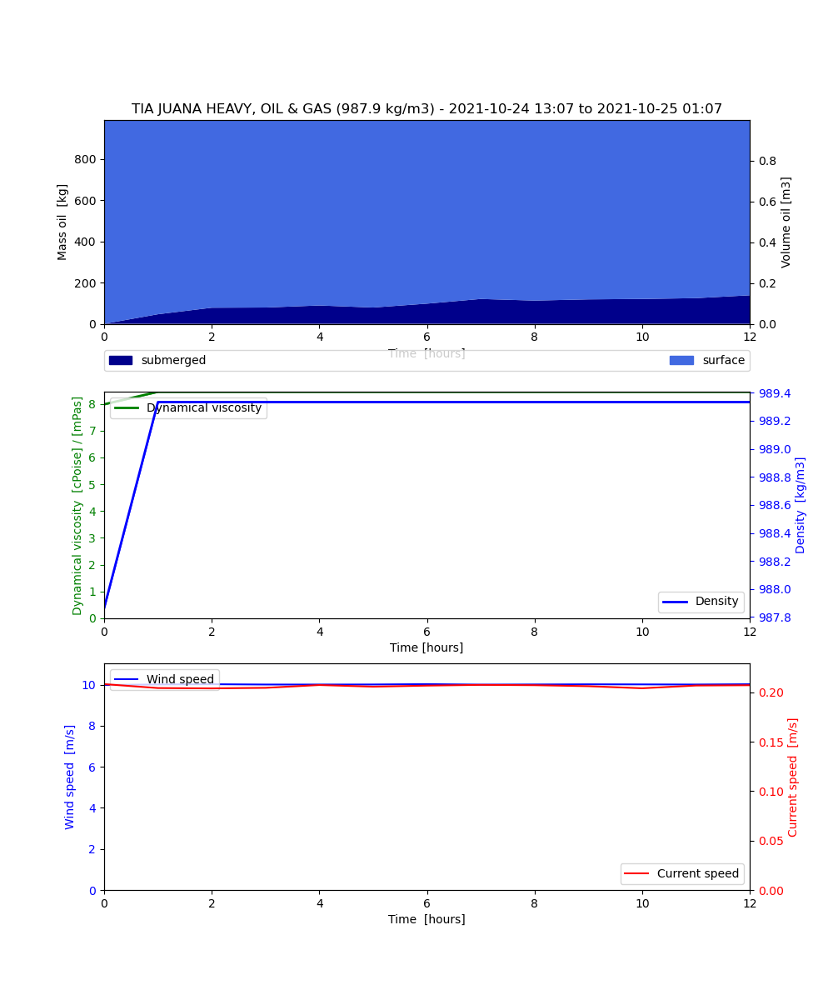
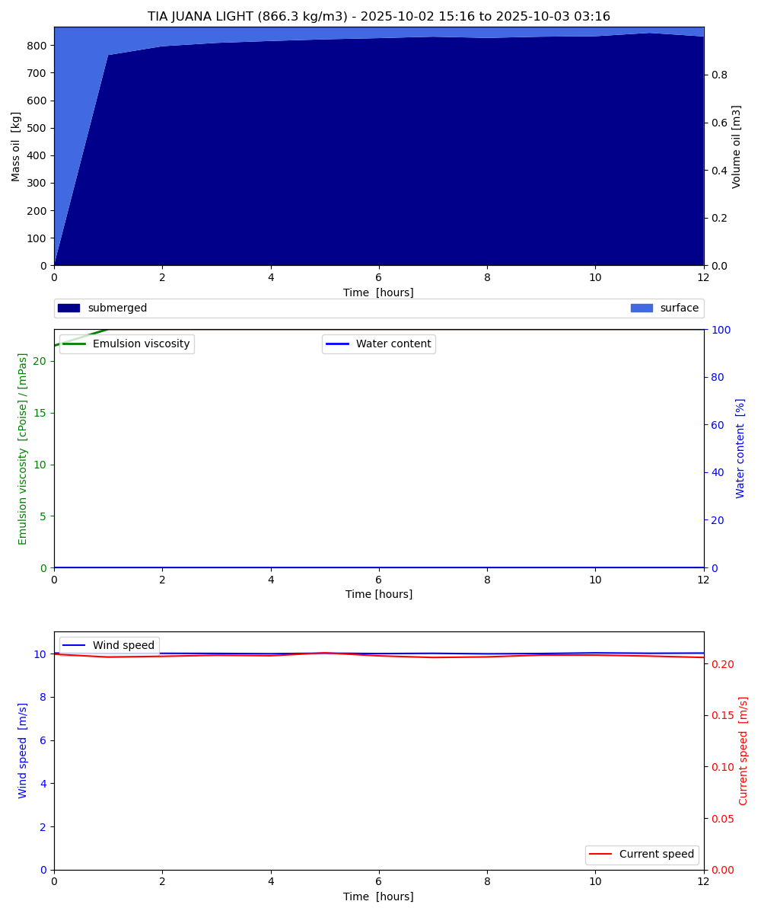

Note
Go to the end to download the full example code
Entrainment rate for light and heavy oils
from datetime import datetime, timedelta
from opendrift.models.openoil import OpenOil
import matplotlib.pyplot as plt
import numpy as np
Li et al. (2017) entrainment rate (light vs. heavy oil)
o2 = OpenOil(loglevel=20, weathering_model='noaa')
o2.set_config('environment:fallback:land_binary_mask', 0)
o2.set_config('environment:fallback:x_sea_water_velocity', -.2)
o2.set_config('environment:fallback:y_sea_water_velocity', 0)
o2.set_config('environment:fallback:x_wind', 10)
o2.set_config('environment:fallback:y_wind', 0)
o2.set_config('environment:fallback:sea_surface_wave_stokes_drift_x_velocity', .3)
o2.set_config('environment:fallback:sea_surface_wave_stokes_drift_y_velocity', 0)
o2.set_config('wave_entrainment:entrainment_rate', 'Li et al. (2017)')
o2.set_config('wave_entrainment:droplet_size_distribution', 'Johansen et al. (2015)')
o2.set_config('processes:evaporation', False)
o2.set_config('processes:dispersion', False)
o2.seed_elements(lon=4, lat=60, time=datetime.utcnow(), number=1000,
radius=100, z=0, oil_type='TIA JUANA HEAVY, OIL & GAS')
o2.run(duration=timedelta(hours=12), time_step=900, time_step_output=3600)
o3 = OpenOil(loglevel=20, weathering_model='noaa')
o3.set_config('environment:fallback:land_binary_mask', 0)
o3.set_config('environment:fallback:x_sea_water_velocity', -.2)
o3.set_config('environment:fallback:y_sea_water_velocity', 0)
o3.set_config('environment:fallback:x_wind', 10)
o3.set_config('environment:fallback:y_wind', 0)
o3.set_config('environment:fallback:sea_surface_wave_stokes_drift_x_velocity', .3)
o3.set_config('environment:fallback:sea_surface_wave_stokes_drift_y_velocity', 0)
o3.set_config('wave_entrainment:entrainment_rate', 'Li et al. (2017)')
o3.set_config('wave_entrainment:droplet_size_distribution', 'Johansen et al. (2015)')
o3.set_config('processes:evaporation', False)
o3.set_config('processes:dispersion', False)
o3.seed_elements(lon=4, lat=60, time=datetime.utcnow(), number=1000,
radius=100, z=0, oil_type='TIA JUANA LIGHT, OIL & GAS') #'EKOFISK BLEND, STATOIL' similar ent.
o3.run(duration=timedelta(hours=12), time_step=900, time_step_output=3600)
13:17:13 INFO opendrift.models.basemodel:528: OpenDriftSimulation initialised (version 1.10.7 / v1.10.6-159-ge61625c)
13:17:13 INFO opendrift.models.openoil.adios.dirjs:71: Querying ADIOS database for oil: TIA JUANA HEAVY, OIL & GAS
13:17:13 INFO opendrift.models.openoil.openoil:1657: Using density 984.522528 and viscosity 0.007112218772423921 of oiltype TIA JUANA HEAVY, OIL & GAS
13:17:13 INFO opendrift.models.basemodel.environment:219: Adding a dynamical landmask with max. priority based on assumed maximum speed of 1.0 m/s. Adding a customised landmask may be faster...
13:17:19 INFO opendrift.models.basemodel.environment:246: Fallback values will be used for the following variables which have no readers:
13:17:19 INFO opendrift.models.basemodel.environment:249: x_sea_water_velocity: -0.200000
13:17:19 INFO opendrift.models.basemodel.environment:249: y_sea_water_velocity: 0.000000
13:17:19 INFO opendrift.models.basemodel.environment:249: x_wind: 10.000000
13:17:19 INFO opendrift.models.basemodel.environment:249: y_wind: 0.000000
13:17:19 INFO opendrift.models.basemodel.environment:249: upward_sea_water_velocity: 0.000000
13:17:19 INFO opendrift.models.basemodel.environment:249: sea_surface_wave_significant_height: 0.000000
13:17:19 INFO opendrift.models.basemodel.environment:249: sea_surface_wave_stokes_drift_x_velocity: 0.300000
13:17:19 INFO opendrift.models.basemodel.environment:249: sea_surface_wave_stokes_drift_y_velocity: 0.000000
13:17:19 INFO opendrift.models.basemodel.environment:249: sea_surface_wave_period_at_variance_spectral_density_maximum: 0.000000
13:17:19 INFO opendrift.models.basemodel.environment:249: sea_surface_wave_mean_period_from_variance_spectral_density_second_frequency_moment: 0.000000
13:17:19 INFO opendrift.models.basemodel.environment:249: sea_ice_area_fraction: 0.000000
13:17:19 INFO opendrift.models.basemodel.environment:249: sea_ice_x_velocity: 0.000000
13:17:19 INFO opendrift.models.basemodel.environment:249: sea_ice_y_velocity: 0.000000
13:17:19 INFO opendrift.models.basemodel.environment:249: sea_water_temperature: 10.000000
13:17:19 INFO opendrift.models.basemodel.environment:249: sea_water_salinity: 34.000000
13:17:19 INFO opendrift.models.basemodel.environment:249: sea_floor_depth_below_sea_level: 10000.000000
13:17:19 INFO opendrift.models.basemodel.environment:249: ocean_vertical_diffusivity: 0.020000
13:17:19 INFO opendrift.models.basemodel.environment:249: ocean_mixed_layer_thickness: 50.000000
13:17:19 INFO opendrift.models.basemodel:891: Using existing reader for land_binary_mask
13:17:19 INFO opendrift.models.basemodel:903: All points are in ocean
13:17:19 INFO opendrift.models.openoil.openoil:651: Oil-water surface tension is 0.035893 Nm
13:17:19 INFO opendrift.models.basemodel:1989: 2023-11-01 13:17:13.525670 - step 1 of 48 - 1000 active elements (0 deactivated)
13:17:19 INFO opendrift.models.basemodel:1989: 2023-11-01 13:32:13.525670 - step 2 of 48 - 1000 active elements (0 deactivated)
13:17:19 INFO opendrift.models.basemodel:1989: 2023-11-01 13:47:13.525670 - step 3 of 48 - 1000 active elements (0 deactivated)
13:17:19 INFO opendrift.models.basemodel:1989: 2023-11-01 14:02:13.525670 - step 4 of 48 - 1000 active elements (0 deactivated)
13:17:19 INFO opendrift.models.basemodel:1989: 2023-11-01 14:17:13.525670 - step 5 of 48 - 1000 active elements (0 deactivated)
13:17:19 INFO opendrift.models.basemodel:1989: 2023-11-01 14:32:13.525670 - step 6 of 48 - 1000 active elements (0 deactivated)
13:17:19 INFO opendrift.models.basemodel:1989: 2023-11-01 14:47:13.525670 - step 7 of 48 - 1000 active elements (0 deactivated)
13:17:19 INFO opendrift.models.basemodel:1989: 2023-11-01 15:02:13.525670 - step 8 of 48 - 1000 active elements (0 deactivated)
13:17:19 INFO opendrift.models.basemodel:1989: 2023-11-01 15:17:13.525670 - step 9 of 48 - 1000 active elements (0 deactivated)
13:17:19 INFO opendrift.models.basemodel:1989: 2023-11-01 15:32:13.525670 - step 10 of 48 - 1000 active elements (0 deactivated)
13:17:19 INFO opendrift.models.basemodel:1989: 2023-11-01 15:47:13.525670 - step 11 of 48 - 1000 active elements (0 deactivated)
13:17:19 INFO opendrift.models.basemodel:1989: 2023-11-01 16:02:13.525670 - step 12 of 48 - 1000 active elements (0 deactivated)
13:17:19 INFO opendrift.models.basemodel:1989: 2023-11-01 16:17:13.525670 - step 13 of 48 - 1000 active elements (0 deactivated)
13:17:19 INFO opendrift.models.basemodel:1989: 2023-11-01 16:32:13.525670 - step 14 of 48 - 1000 active elements (0 deactivated)
13:17:19 INFO opendrift.models.basemodel:1989: 2023-11-01 16:47:13.525670 - step 15 of 48 - 1000 active elements (0 deactivated)
13:17:19 INFO opendrift.models.basemodel:1989: 2023-11-01 17:02:13.525670 - step 16 of 48 - 1000 active elements (0 deactivated)
13:17:19 INFO opendrift.models.basemodel:1989: 2023-11-01 17:17:13.525670 - step 17 of 48 - 1000 active elements (0 deactivated)
13:17:19 INFO opendrift.models.basemodel:1989: 2023-11-01 17:32:13.525670 - step 18 of 48 - 1000 active elements (0 deactivated)
13:17:20 INFO opendrift.models.basemodel:1989: 2023-11-01 17:47:13.525670 - step 19 of 48 - 1000 active elements (0 deactivated)
13:17:20 INFO opendrift.models.basemodel:1989: 2023-11-01 18:02:13.525670 - step 20 of 48 - 1000 active elements (0 deactivated)
13:17:20 INFO opendrift.models.basemodel:1989: 2023-11-01 18:17:13.525670 - step 21 of 48 - 1000 active elements (0 deactivated)
13:17:20 INFO opendrift.models.basemodel:1989: 2023-11-01 18:32:13.525670 - step 22 of 48 - 1000 active elements (0 deactivated)
13:17:20 INFO opendrift.models.basemodel:1989: 2023-11-01 18:47:13.525670 - step 23 of 48 - 1000 active elements (0 deactivated)
13:17:20 INFO opendrift.models.basemodel:1989: 2023-11-01 19:02:13.525670 - step 24 of 48 - 1000 active elements (0 deactivated)
13:17:20 INFO opendrift.models.basemodel:1989: 2023-11-01 19:17:13.525670 - step 25 of 48 - 1000 active elements (0 deactivated)
13:17:20 INFO opendrift.models.basemodel:1989: 2023-11-01 19:32:13.525670 - step 26 of 48 - 1000 active elements (0 deactivated)
13:17:20 INFO opendrift.models.basemodel:1989: 2023-11-01 19:47:13.525670 - step 27 of 48 - 1000 active elements (0 deactivated)
13:17:20 INFO opendrift.models.basemodel:1989: 2023-11-01 20:02:13.525670 - step 28 of 48 - 1000 active elements (0 deactivated)
13:17:20 INFO opendrift.models.basemodel:1989: 2023-11-01 20:17:13.525670 - step 29 of 48 - 1000 active elements (0 deactivated)
13:17:20 INFO opendrift.models.basemodel:1989: 2023-11-01 20:32:13.525670 - step 30 of 48 - 1000 active elements (0 deactivated)
13:17:20 INFO opendrift.models.basemodel:1989: 2023-11-01 20:47:13.525670 - step 31 of 48 - 1000 active elements (0 deactivated)
13:17:20 INFO opendrift.models.basemodel:1989: 2023-11-01 21:02:13.525670 - step 32 of 48 - 1000 active elements (0 deactivated)
13:17:20 INFO opendrift.models.basemodel:1989: 2023-11-01 21:17:13.525670 - step 33 of 48 - 1000 active elements (0 deactivated)
13:17:20 INFO opendrift.models.basemodel:1989: 2023-11-01 21:32:13.525670 - step 34 of 48 - 1000 active elements (0 deactivated)
13:17:20 INFO opendrift.models.basemodel:1989: 2023-11-01 21:47:13.525670 - step 35 of 48 - 1000 active elements (0 deactivated)
13:17:20 INFO opendrift.models.basemodel:1989: 2023-11-01 22:02:13.525670 - step 36 of 48 - 1000 active elements (0 deactivated)
13:17:20 INFO opendrift.models.basemodel:1989: 2023-11-01 22:17:13.525670 - step 37 of 48 - 1000 active elements (0 deactivated)
13:17:20 INFO opendrift.models.basemodel:1989: 2023-11-01 22:32:13.525670 - step 38 of 48 - 1000 active elements (0 deactivated)
13:17:20 INFO opendrift.models.basemodel:1989: 2023-11-01 22:47:13.525670 - step 39 of 48 - 1000 active elements (0 deactivated)
13:17:21 INFO opendrift.models.basemodel:1989: 2023-11-01 23:02:13.525670 - step 40 of 48 - 1000 active elements (0 deactivated)
13:17:21 INFO opendrift.models.basemodel:1989: 2023-11-01 23:17:13.525670 - step 41 of 48 - 1000 active elements (0 deactivated)
13:17:21 INFO opendrift.models.basemodel:1989: 2023-11-01 23:32:13.525670 - step 42 of 48 - 1000 active elements (0 deactivated)
13:17:21 INFO opendrift.models.basemodel:1989: 2023-11-01 23:47:13.525670 - step 43 of 48 - 1000 active elements (0 deactivated)
13:17:21 INFO opendrift.models.basemodel:1989: 2023-11-02 00:02:13.525670 - step 44 of 48 - 1000 active elements (0 deactivated)
13:17:21 INFO opendrift.models.basemodel:1989: 2023-11-02 00:17:13.525670 - step 45 of 48 - 1000 active elements (0 deactivated)
13:17:21 INFO opendrift.models.basemodel:1989: 2023-11-02 00:32:13.525670 - step 46 of 48 - 1000 active elements (0 deactivated)
13:17:21 INFO opendrift.models.basemodel:1989: 2023-11-02 00:47:13.525670 - step 47 of 48 - 1000 active elements (0 deactivated)
13:17:21 INFO opendrift.models.basemodel:1989: 2023-11-02 01:02:13.525670 - step 48 of 48 - 1000 active elements (0 deactivated)
13:17:21 INFO opendrift.models.basemodel:528: OpenDriftSimulation initialised (version 1.10.7 / v1.10.6-159-ge61625c)
13:17:21 INFO opendrift.models.openoil.adios.dirjs:71: Querying ADIOS database for oil: TIA JUANA LIGHT, OIL & GAS
13:17:21 INFO opendrift.models.openoil.openoil:1657: Using density 864.162844 and viscosity 1.8947129026023278e-05 of oiltype TIA JUANA LIGHT, OIL & GAS
13:17:21 INFO opendrift.models.basemodel.environment:219: Adding a dynamical landmask with max. priority based on assumed maximum speed of 1.0 m/s. Adding a customised landmask may be faster...
13:17:21 INFO opendrift.models.basemodel.environment:246: Fallback values will be used for the following variables which have no readers:
13:17:21 INFO opendrift.models.basemodel.environment:249: x_sea_water_velocity: -0.200000
13:17:21 INFO opendrift.models.basemodel.environment:249: y_sea_water_velocity: 0.000000
13:17:21 INFO opendrift.models.basemodel.environment:249: x_wind: 10.000000
13:17:21 INFO opendrift.models.basemodel.environment:249: y_wind: 0.000000
13:17:21 INFO opendrift.models.basemodel.environment:249: upward_sea_water_velocity: 0.000000
13:17:21 INFO opendrift.models.basemodel.environment:249: sea_surface_wave_significant_height: 0.000000
13:17:21 INFO opendrift.models.basemodel.environment:249: sea_surface_wave_stokes_drift_x_velocity: 0.300000
13:17:21 INFO opendrift.models.basemodel.environment:249: sea_surface_wave_stokes_drift_y_velocity: 0.000000
13:17:21 INFO opendrift.models.basemodel.environment:249: sea_surface_wave_period_at_variance_spectral_density_maximum: 0.000000
13:17:21 INFO opendrift.models.basemodel.environment:249: sea_surface_wave_mean_period_from_variance_spectral_density_second_frequency_moment: 0.000000
13:17:21 INFO opendrift.models.basemodel.environment:249: sea_ice_area_fraction: 0.000000
13:17:21 INFO opendrift.models.basemodel.environment:249: sea_ice_x_velocity: 0.000000
13:17:21 INFO opendrift.models.basemodel.environment:249: sea_ice_y_velocity: 0.000000
13:17:21 INFO opendrift.models.basemodel.environment:249: sea_water_temperature: 10.000000
13:17:21 INFO opendrift.models.basemodel.environment:249: sea_water_salinity: 34.000000
13:17:21 INFO opendrift.models.basemodel.environment:249: sea_floor_depth_below_sea_level: 10000.000000
13:17:21 INFO opendrift.models.basemodel.environment:249: ocean_vertical_diffusivity: 0.020000
13:17:21 INFO opendrift.models.basemodel.environment:249: ocean_mixed_layer_thickness: 50.000000
13:17:21 INFO opendrift.models.basemodel:891: Using existing reader for land_binary_mask
13:17:21 INFO opendrift.models.basemodel:903: All points are in ocean
13:17:21 INFO opendrift.models.openoil.openoil:651: Oil-water surface tension is 0.030752 Nm
13:17:21 INFO opendrift.models.basemodel:1989: 2023-11-01 13:17:21.666790 - step 1 of 48 - 1000 active elements (0 deactivated)
13:17:21 INFO opendrift.models.basemodel:1989: 2023-11-01 13:32:21.666790 - step 2 of 48 - 1000 active elements (0 deactivated)
13:17:21 INFO opendrift.models.basemodel:1989: 2023-11-01 13:47:21.666790 - step 3 of 48 - 1000 active elements (0 deactivated)
13:17:21 INFO opendrift.models.basemodel:1989: 2023-11-01 14:02:21.666790 - step 4 of 48 - 1000 active elements (0 deactivated)
13:17:21 INFO opendrift.models.basemodel:1989: 2023-11-01 14:17:21.666790 - step 5 of 48 - 1000 active elements (0 deactivated)
13:17:21 INFO opendrift.models.basemodel:1989: 2023-11-01 14:32:21.666790 - step 6 of 48 - 1000 active elements (0 deactivated)
13:17:21 INFO opendrift.models.basemodel:1989: 2023-11-01 14:47:21.666790 - step 7 of 48 - 1000 active elements (0 deactivated)
13:17:22 INFO opendrift.models.basemodel:1989: 2023-11-01 15:02:21.666790 - step 8 of 48 - 1000 active elements (0 deactivated)
13:17:22 INFO opendrift.models.basemodel:1989: 2023-11-01 15:17:21.666790 - step 9 of 48 - 1000 active elements (0 deactivated)
13:17:22 INFO opendrift.models.basemodel:1989: 2023-11-01 15:32:21.666790 - step 10 of 48 - 1000 active elements (0 deactivated)
13:17:22 INFO opendrift.models.basemodel:1989: 2023-11-01 15:47:21.666790 - step 11 of 48 - 1000 active elements (0 deactivated)
13:17:22 INFO opendrift.models.basemodel:1989: 2023-11-01 16:02:21.666790 - step 12 of 48 - 1000 active elements (0 deactivated)
13:17:22 INFO opendrift.models.basemodel:1989: 2023-11-01 16:17:21.666790 - step 13 of 48 - 1000 active elements (0 deactivated)
13:17:22 INFO opendrift.models.basemodel:1989: 2023-11-01 16:32:21.666790 - step 14 of 48 - 1000 active elements (0 deactivated)
13:17:22 INFO opendrift.models.basemodel:1989: 2023-11-01 16:47:21.666790 - step 15 of 48 - 1000 active elements (0 deactivated)
13:17:22 INFO opendrift.models.basemodel:1989: 2023-11-01 17:02:21.666790 - step 16 of 48 - 1000 active elements (0 deactivated)
13:17:22 INFO opendrift.models.basemodel:1989: 2023-11-01 17:17:21.666790 - step 17 of 48 - 1000 active elements (0 deactivated)
13:17:22 INFO opendrift.models.basemodel:1989: 2023-11-01 17:32:21.666790 - step 18 of 48 - 1000 active elements (0 deactivated)
13:17:22 INFO opendrift.models.basemodel:1989: 2023-11-01 17:47:21.666790 - step 19 of 48 - 1000 active elements (0 deactivated)
13:17:22 INFO opendrift.models.basemodel:1989: 2023-11-01 18:02:21.666790 - step 20 of 48 - 1000 active elements (0 deactivated)
13:17:22 INFO opendrift.models.basemodel:1989: 2023-11-01 18:17:21.666790 - step 21 of 48 - 1000 active elements (0 deactivated)
13:17:22 INFO opendrift.models.basemodel:1989: 2023-11-01 18:32:21.666790 - step 22 of 48 - 1000 active elements (0 deactivated)
13:17:22 INFO opendrift.models.basemodel:1989: 2023-11-01 18:47:21.666790 - step 23 of 48 - 1000 active elements (0 deactivated)
13:17:22 INFO opendrift.models.basemodel:1989: 2023-11-01 19:02:21.666790 - step 24 of 48 - 1000 active elements (0 deactivated)
13:17:22 INFO opendrift.models.basemodel:1989: 2023-11-01 19:17:21.666790 - step 25 of 48 - 1000 active elements (0 deactivated)
13:17:22 INFO opendrift.models.basemodel:1989: 2023-11-01 19:32:21.666790 - step 26 of 48 - 1000 active elements (0 deactivated)
13:17:22 INFO opendrift.models.basemodel:1989: 2023-11-01 19:47:21.666790 - step 27 of 48 - 1000 active elements (0 deactivated)
13:17:23 INFO opendrift.models.basemodel:1989: 2023-11-01 20:02:21.666790 - step 28 of 48 - 1000 active elements (0 deactivated)
13:17:23 INFO opendrift.models.basemodel:1989: 2023-11-01 20:17:21.666790 - step 29 of 48 - 1000 active elements (0 deactivated)
13:17:23 INFO opendrift.models.basemodel:1989: 2023-11-01 20:32:21.666790 - step 30 of 48 - 1000 active elements (0 deactivated)
13:17:23 INFO opendrift.models.basemodel:1989: 2023-11-01 20:47:21.666790 - step 31 of 48 - 1000 active elements (0 deactivated)
13:17:23 INFO opendrift.models.basemodel:1989: 2023-11-01 21:02:21.666790 - step 32 of 48 - 1000 active elements (0 deactivated)
13:17:23 INFO opendrift.models.basemodel:1989: 2023-11-01 21:17:21.666790 - step 33 of 48 - 1000 active elements (0 deactivated)
13:17:23 INFO opendrift.models.basemodel:1989: 2023-11-01 21:32:21.666790 - step 34 of 48 - 1000 active elements (0 deactivated)
13:17:23 INFO opendrift.models.basemodel:1989: 2023-11-01 21:47:21.666790 - step 35 of 48 - 1000 active elements (0 deactivated)
13:17:23 INFO opendrift.models.basemodel:1989: 2023-11-01 22:02:21.666790 - step 36 of 48 - 1000 active elements (0 deactivated)
13:17:23 INFO opendrift.models.basemodel:1989: 2023-11-01 22:17:21.666790 - step 37 of 48 - 1000 active elements (0 deactivated)
13:17:23 INFO opendrift.models.basemodel:1989: 2023-11-01 22:32:21.666790 - step 38 of 48 - 1000 active elements (0 deactivated)
13:17:23 INFO opendrift.models.basemodel:1989: 2023-11-01 22:47:21.666790 - step 39 of 48 - 1000 active elements (0 deactivated)
13:17:23 INFO opendrift.models.basemodel:1989: 2023-11-01 23:02:21.666790 - step 40 of 48 - 1000 active elements (0 deactivated)
13:17:23 INFO opendrift.models.basemodel:1989: 2023-11-01 23:17:21.666790 - step 41 of 48 - 1000 active elements (0 deactivated)
13:17:23 INFO opendrift.models.basemodel:1989: 2023-11-01 23:32:21.666790 - step 42 of 48 - 1000 active elements (0 deactivated)
13:17:23 INFO opendrift.models.basemodel:1989: 2023-11-01 23:47:21.666790 - step 43 of 48 - 1000 active elements (0 deactivated)
13:17:23 INFO opendrift.models.basemodel:1989: 2023-11-02 00:02:21.666790 - step 44 of 48 - 1000 active elements (0 deactivated)
13:17:23 INFO opendrift.models.basemodel:1989: 2023-11-02 00:17:21.666790 - step 45 of 48 - 1000 active elements (0 deactivated)
13:17:23 INFO opendrift.models.basemodel:1989: 2023-11-02 00:32:21.666790 - step 46 of 48 - 1000 active elements (0 deactivated)
13:17:23 INFO opendrift.models.basemodel:1989: 2023-11-02 00:47:21.666790 - step 47 of 48 - 1000 active elements (0 deactivated)
13:17:23 INFO opendrift.models.basemodel:1989: 2023-11-02 01:02:21.666790 - step 48 of 48 - 1000 active elements (0 deactivated)
Plotting and comparing
print('#######################')
print('Entrainment rate (heavy)', np.mean(o2.oil_wave_entrainment_rate()))
print('Entrainment rate (light)', np.mean(o3.oil_wave_entrainment_rate()))
print('Viscosity (heavy)', np.mean(o2.elements.viscosity))
print('Viscosity (light)', np.mean(o3.elements.viscosity))
print('Density (heavy)', np.mean(o2.elements.density))
print('Density (light)', np.mean(o3.elements.density))
print('#######################')
o2.plot_oil_budget()
o3.plot_oil_budget()
legend = ['TIA JUANA HEAVY', 'TIA JUANA LIGHT']
o2.animation_profile(compare=o3, legend=legend)
- 
- 
#######################
Entrainment rate (heavy) 0.00011830302179871428
Entrainment rate (light) 0.011824965487534997
Viscosity (heavy) 0.007462998386472464
Viscosity (light) 1.9881614207406528e-05
Density (heavy) 984.5240478515625
Density (light) 864.1644897460938
#######################
13:17:24 INFO opendrift.models.basemodel:4506: Saving animation to /root/project/docs/source/gallery/animations/__init___0.gif...
13:17:25 INFO opendrift.models.basemodel:3178: Time to make animation: 0:00:00.734603
o2.animation(compare=o3, legend=legend, fast=True)
13:17:25 WARNING opendrift.models.basemodel:2357: Plotting fast. This will make your plots less accurate.
/opt/conda/envs/opendrift/lib/python3.11/site-packages/cartopy/mpl/geoaxes.py:1696: UserWarning: No data for colormapping provided via 'c'. Parameters 'cmap' will be ignored
result = super().scatter(*args, **kwargs)
13:17:27 INFO opendrift.models.basemodel:4506: Saving animation to /root/project/docs/source/gallery/animations/example_entrainment_rate_oil_types_0.gif...
13:17:29 INFO opendrift.models.basemodel:2986: Time to make animation: 0:00:04.113856

Total running time of the script: (0 minutes 17.004 seconds)